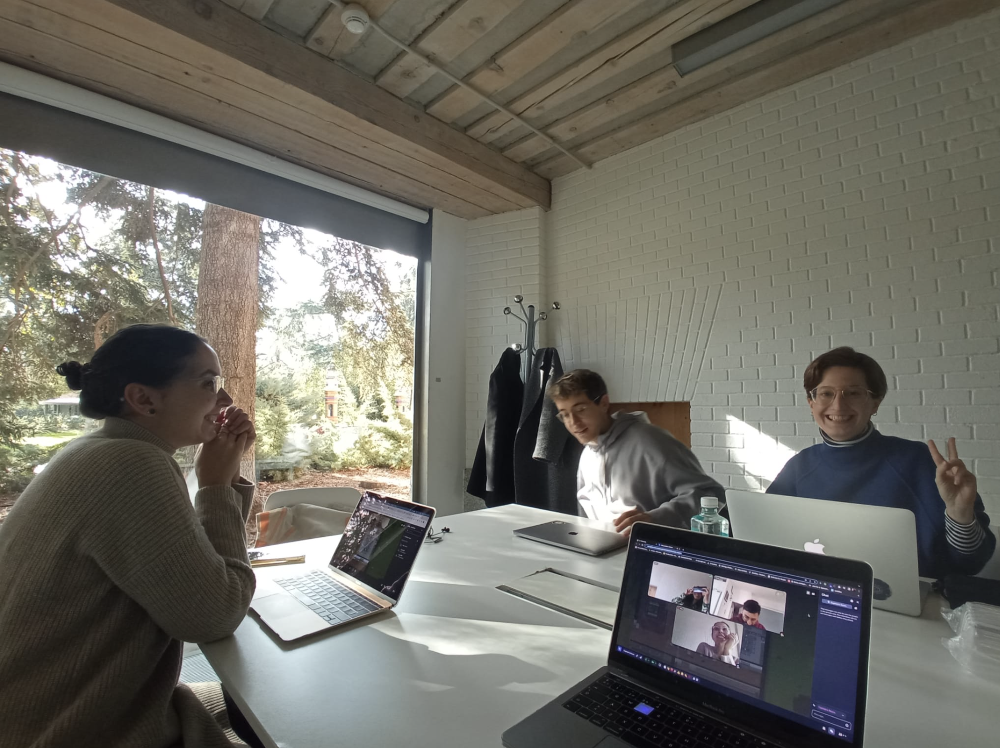

| 1. Accede al código fuente que compartiremos todas AQUÍ y haz clic en el botón REMIX para duplicarlo. |
| 2. Aquí hay un resumen de todas las etiquetas HTML que existen. |
| 3. Para entender mejor de qué hablamos cuando hablamos de HTML, lee esta documentación. |
|
✶ Referencias para soñar webs mágicas
IndieWeb Sundays sites HTML energy a motherfucking web manifesto What website should I design? Making a poetic web(site) a website as a poem, a garden, a portal, a place of gathering and more ritual engineer IS MY COMPUTER ON? jodi WYSIWYG Esoteric codes Map is the territory |
|  |

|

|